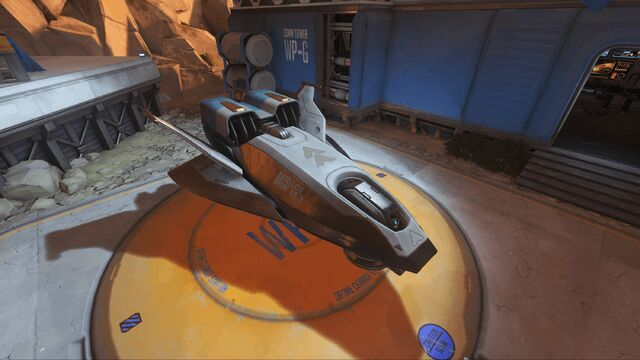
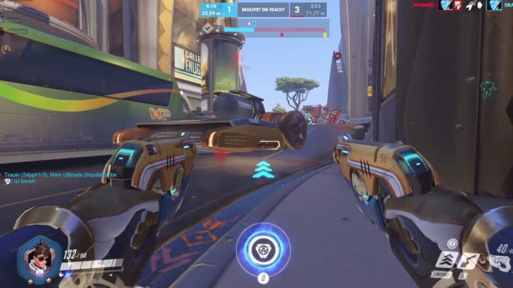

Auf dieser Seite finden Sie nähere Informationen zu den Spielmodus innerhalb des Spiels.
Angriff: dieser Spielmodus wird auf den Karten „Tempel des Anubis“ (Ägypten), „Hanamura“ (Japan), „Horizon Lunar Colony“ (Mond) und „Volskaya Industries“ (Russland) gespielt. Jede Karte enthält zwei unabhängige Bereiche, die das angreifende Team durch Besetzen einnehmen muss. Der erste Punkt wird nach Spielstart aktiv. Der zweite Punkt wird erst direkt nach der Einnahme des ersten Punktes verfügbar. Ein Punkt wird dadurch eingenommen, dass mindestens ein Spieler des angreifenden Teams auf diesem Punkt steht. Sobald mindestens ein verteidigender Held ebenfalls in dem Bereich des Punktes steht, wird die Einnahme unterbrochen. Der Fortschritt verfällt, sobald sich für eine gewisse Zeit kein angreifender Held im Bereich des Zielpunkts aufhält. Jedes Ziel ist zusätzlich in drei Zieleinnahme-Abschnitte eingeteilt. Diese in einem Kreis abgebildeten Etappen können nach der Eroberung nicht durch die Verteidiger zurückerobert werden. Bei drei erreichten Teilen ist der Zielpunkt komplett eingenommen. Die Fortschritte bei der Einnahme werden mittels eines Balkens für alle einnehmenden Helden angezeigt. Das angreifende Team gewinnt die Runde, indem es beide Punkte eingenommen hat. Das verteidigende Team gewinnt, wenn es die Angreifer für eine bestimmte Zeit von der Einnahme des Zielpunkts 1 bzw. anschließend des Zielpunkts 2 abgehalten hat.
Eskorte: auf den Karten „Watchpoint: Gibraltar“ (Overwatch), „Dorado“ (Mexiko), „Junkertown“ (Australien), „Route 66“ (Vereinigte Staaten), „Rialto“ (Italien) und „Havanna“ (Kuba)[30] begleitet das angreifende Team eine Fracht bis zu einem bestimmten Zielpunkt. Beide Teams versuchen, die Kontrolle über die Fracht zu erhalten. Dabei bewegt sich die Fracht nur, wenn lediglich Helden eines Teams im Bereich der Fracht stehen. Die Angreifer versuchen, die Fracht an einen Zielpunkt zu bewegen. Die Fracht durchfährt dabei Checkpoints (pro Karte zwei). Ab diesem Checkpoint wird der Fortschritt gesichert und das angreifende Team erhält zusätzliche Zeit. Das verteidigende Team kann die Fracht bis zu jedem erreichten Checkpoint „zurückschieben“, um so den Fortschritt zu verlangsamen. Die Fracht fährt eine feste Strecke ab, wodurch das verteidigende Team mittels Flankieren über bestimmte Wege dem angreifenden Team Probleme bereiten kann. Die Position der Fracht ist für das angreifende wie auch für das verteidigende Team auch durch Gebäude (mittels eines Umrisses) sichtbar.
Kontrolle: dieser Spielmodus wird auf den Karten „Lijiang Tower“ (China) „Ilios“ (Griechenland), „Nepal“ und „Oasis“ (Ägypten)[31] und „Busan“ (Korea)[32] gespielt. Der Spielmodus beinhaltet die Eroberung und Kontrolle eines Punktes, bis ein Team 100 % Fortschritt erreicht hat. Der Spielmodus ist dabei in maximal drei Runden aufgeteilt. Das Team, das zuerst auf zwei Punkten 100 % Fortschritt erreicht, gewinnt das Spiel. Es gibt für diesen Modus kein Zeitlimit. Die Punkteinnahme beginnt jeweils, wenn ein verbündeter Held nach aktiv werden des Punktes im Bereich der Einnahme steht. Der Fortschritt wird durch einen Fortschrittsbalken angezeigt. Sobald ein Held des gegnerischen Teams auf den Punkt gelangt, stoppt die Einnahme, bis wieder nur Helden eines Teams auf dem Ziel stehen. Sobald ein Team den Punkt eingenommen hat, beginnt der Fortschritt bis zu 100 %. Gelangt ab diesem Zeitpunkt ein gegnerischer Held auf den Punkt, erscheint die Meldung „Umkämpft“, der Fortschritt zählt aber bis zu 99 % weiter. Dies kann nur durch die Einnahme des Ziels durch das jeweils andere Team gestoppt werden. Somit ist die Spieldauer durch die Punkteinnahme begrenzt. Die Runde endet, sobald ein Team 100 % (und ggf. die „Overtime“) erreicht hat.
Angriff/Eskorte Hybrid: dieser Spielmodus ist eine Mischung aus dem Modus Angriff und dem Modus Eskorte. Er wird auf den Karten „King’s Row“ (Vereinigtes Königreich) „Numbani“ (etwa heutiges Nigeria) „Hollywood“ (Vereinigte Staaten), „Blizzard World“ (Vereinigte Staaten) und „Eichenwalde“ (Deutschland) gespielt. Der Modus verbindet dabei am Anfang eine Punkteinnahme, die wie beim Modus „Angriff“ aufgebaut ist. Das verteidigende Team profitiert dabei an diesem Abschnitt von meist guten Verteidigungspositionen. Auf oder bei dem Punkt steht eine Fracht bereit, die eskortiert werden muss. Sobald das angreifende Team den Punkt wie im Modus „Angriff“ eingenommen hat, wird die Fracht aktiv und der zweite Modus des Spiels startet. Nun muss das angreifende Team die Fracht auf einem festgelegten Weg bewegen und zum endgültigen Zielpunkt eskortieren. Auch hier gibt es wieder pro Karte zwei Checkpoints, an denen der Fortschritt gespeichert wird. Ab diesem Teil des Spiels haben die Verteidiger und die Angreifer ein weit offenere Karte mit verschiedenen versteckten Wegen. Das angreifende Team gewinnt, sobald die Fracht (ggf. nach einer „Overtime“) den Zielpunkt erreicht hat. Das verteidigende Team versucht, dies für einen bestimmten Zeitraum zu verhindern, welcher mit jedem erfolgreich erreichten Checkpoint zunimmt. Die Karten, auf denen dieser gemischte Modus gespielt wird, haben die größte Spielfläche.